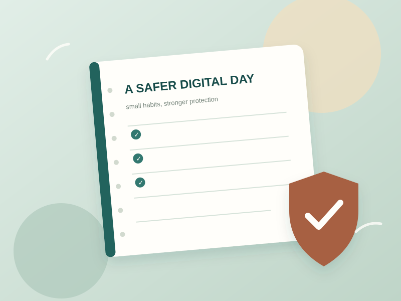
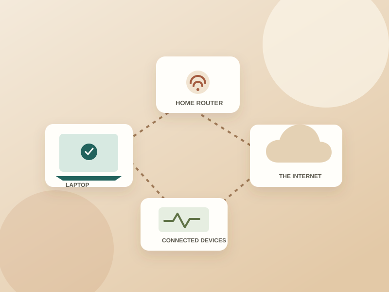
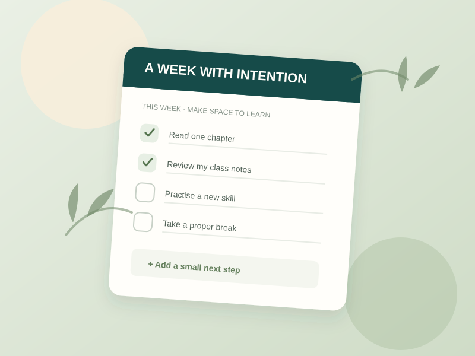

01WEB DESIGN · CONCEPT
Security Notes
A calm, beginner-friendly guide to everyday online safety, designed to turn good security habits into small, memorable steps.
Ask about this project ↗IDEAS, MADE TANGIBLE
Concept projects created to practise useful skills and explore everyday problems. Each is a work in progress, not a deployed service.

01WEB DESIGN · CONCEPT
A calm, beginner-friendly guide to everyday online safety, designed to turn good security habits into small, memorable steps.
Ask about this project ↗
02NETWORKING · LEARNING
A simple visual-learning concept for understanding how familiar devices connect, with an emphasis on safe home-network habits.
Ask about this project ↗
03JAVASCRIPT · COURSEWORK
A lightweight academic task list that lets students capture work, mark completed items, and keep their plans between visits.
Try the planner ↗Learning out loud. These examples are educational concepts. They do not collect personal data or provide professional cybersecurity services.
Have a suggestion?